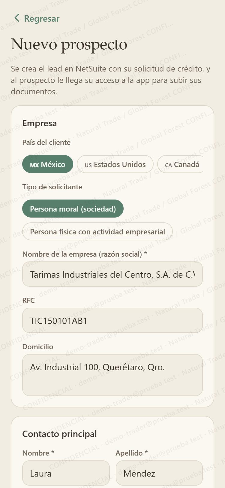
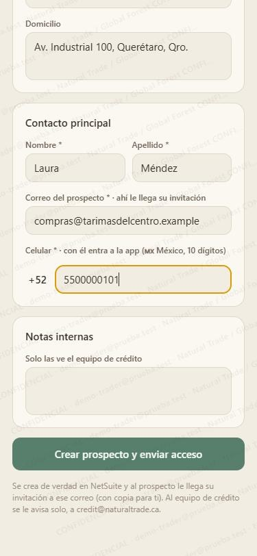

Guías de la NT App
Guías de la NT App
Da de alta un prospecto
Desde tu celular creas al prospecto en NetSuite, con su solicitud de crédito, y le llega su acceso a la app para que suba sus documentos. Todo en un solo formulario.
Abre el alta
Tienes tres caminos, todos llevan al mismo formulario:
- En tu Inicio, sección Clientes: Nuevo prospecto y solicitud de crédito.
- En tu Inicio, sección Crédito: Nueva solicitud de crédito (prospecto).
- En Mis clientes, arriba de la lista.
Datos de la empresa
- País del cliente: cambia la lada del celular y el formato del domicilio.
- Tipo de solicitante: persona moral (sociedad) o persona física con actividad empresarial.
- Nombre de la empresa (razón social), obligatorio.
- RFC (fuera de México, su identificación fiscal) y domicilio, si los tienes.

Contacto principal
- Nombre y apellido de quien te compra.
- Correo del prospecto: ahí le llega su invitación. Tiene que ser el suyo; uno de NT o GF no se acepta (a crédito se le avisa solo).
- Celular: con él entra a la app. Con la lada del país que elegiste.
- Notas internas (opcional): solo las ve el equipo de crédito.
Toca Crear prospecto y enviar acceso.

Revisa lo que quedó
Al terminar ves Prospecto creado con cuatro renglones:
- En NetSuite: el número del lead, con su contacto.
- Solicitud de crédito: su número, en borrador; crédito ya está avisado.
- Acceso a la app: entra con su celular; por ahora solo ve Crédito.
- Correo: a qué dirección le llegó, con copia para ti.
Lo que sigue
El prospecto entra a la app con su celular y sube sus documentos de crédito. Cuando crédito apruebe la solicitud, te avisamos para que elijas qué más ve.
Para que empiece a recibir ofertas, sigue la guía 1: Activa las ofertas de tu cliente.
Un buen hábito: mándale un WhatsApp en ese momento para que sepa que le llegó la invitación y la abra.
Las capturas son de la versión de demostración de la NT App, con datos de ejemplo. Natural Trade · Global Forest. Todas las guías.